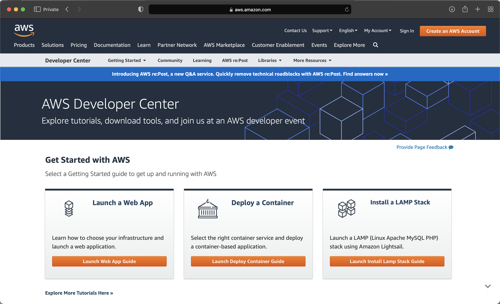
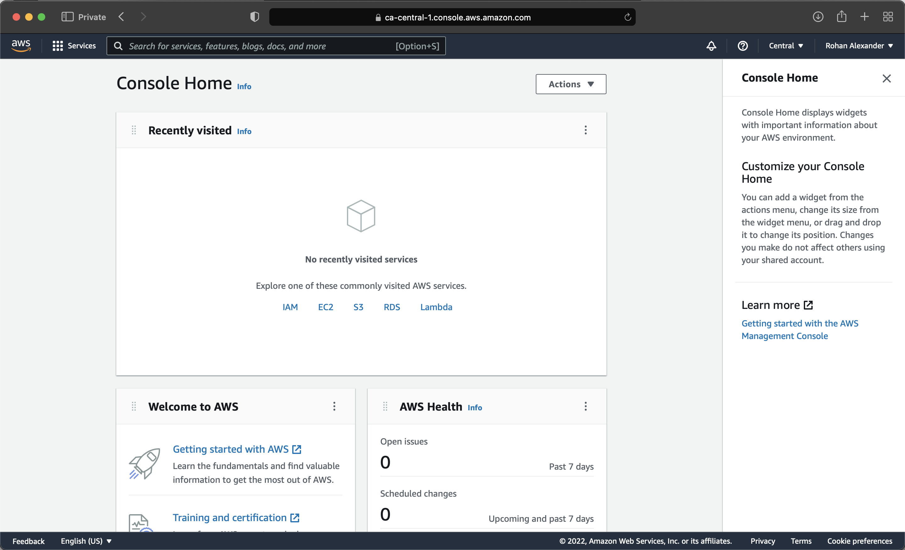
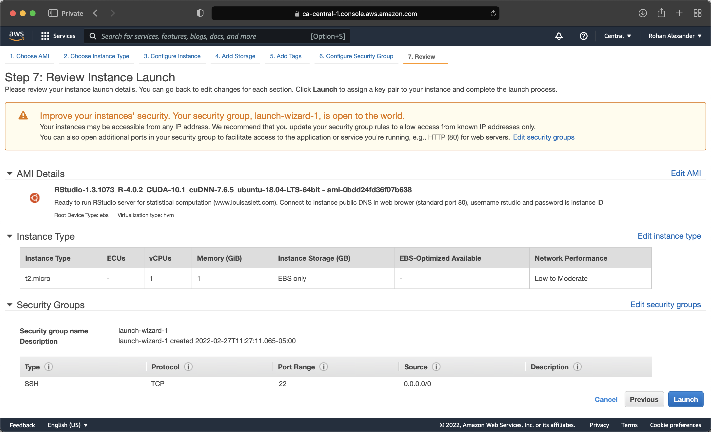
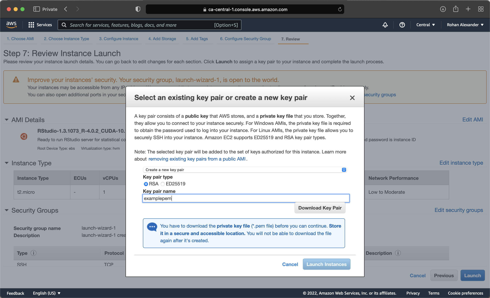
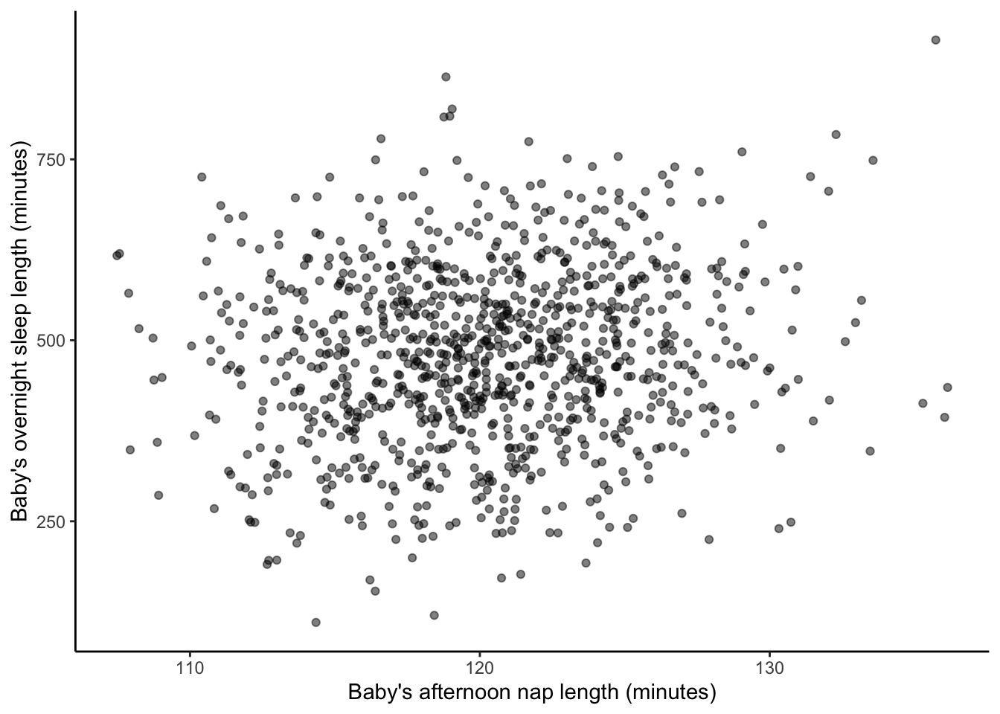

library(analogsea)
library(plumber)
#library(plumberDeploy)
library(remotes)
#library(ssh)
library(tidymodels)
library(tidyverse)Online Appendix G — 생산
선수 지식
- 과학, 클라우드를 강타하다, (Gentemann 기타 2021) 읽기
- 클라우드를 사용하여 계산할 수 있는 것의 중요성을 설명합니다.
- 기계 학습은 실시간으로 진행된다, (Huyen 2020) 읽기
- 즉석에서 예측할 수 있는 필요성에 대한 논의입니다.
- Plumber API로 R 민주화하기, (Blair 2019) 시청하기
- API를 만들기 위해
plumber를 사용하는 것에 대한 개요입니다.
- API를 만들기 위해
- 기계 학습 운영화: 인터뷰 연구, (Shankar 기타 2022) 읽기.
- 기계 학습 엔지니어와의 인터뷰 결과를 제공합니다.
주요 개념 및 기술
- 모델을 생산에 투입하는 것, 즉 실제 환경에서 사용하는 것은 클라우드 공급자에 대한 친숙함과 API를 생성하는 능력을 포함한 추가적인 기술 세트를 필요로 합니다.
소프트웨어 및 패키지
analogsea(Chamberlain 기타 2022)plumber(Schloerke 와/과 Allen 2022)plumberDeploy(Allen 2021)remotes(Csárdi 기타 2021)ssh(Ooms 2022)tidymodels(Kuhn 와/과 Wickham 2020)tidyverse(Wickham 기타 2019)
G.1 소개
데이터셋을 개발하고 우리가 확신할 수 있는 모델로 탐색하는 작업을 마친 후, 우리는 그것을 우리 자신의 컴퓨터뿐만 아니라 더 널리 사용하고 싶을 수 있습니다. 이것을 하는 다양한 방법이 있습니다. 다음을 포함합니다.
- 클라우드 사용;
- R 패키지 생성;
shiny응용 프로그램 만들기; 그리고plumber를 사용하여 API 만들기.
여기서 일반적인 아이디어는 우리가 전체 워크플로를 알고, 다른 사람들이 그것을 신뢰하도록 허용해야 한다는 것입니다. 이것이 지금까지 우리의 접근 방식이 가져온 것입니다. 그 후, 우리는 모델을 더 널리 사용하고 싶을 수 있습니다. 예를 들어, 웹사이트에서 일부 데이터를 스크랩하고, 그 혼돈에 질서를 부여하고, 일부 차트를 만들고, 적절하게 모델링하고, 이 모든 것을 작성했다고 가정해 봅시다. 대부분의 학술 환경에서는 그것으로 충분합니다. 그러나 많은 산업 환경에서는 모델을 사용하여 무언가를 하고 싶을 것입니다. 예를 들어, 여러 입력을 기반으로 모델을 사용하여 보험 견적을 생성할 수 있는 웹사이트를 설정하는 것입니다.
이 장에서는 먼저 계산을 로컬 컴퓨터에서 클라우드로 이동하는 것으로 시작합니다. 그런 다음 모델 공유를 위한 R 패키지 및 Shiny 사용에 대해 설명합니다. 그것은 잘 작동하지만, 일부 환경에서는 다른 사용자가 우리가 초점을 맞추지 않는 방식으로 모델과 상호 작용하고 싶을 수 있습니다. 이것을 허용하는 한 가지 방법은 결과를 다른 컴퓨터에서 사용할 수 있도록 하는 것이며, 이를 위해 API를 만들고 싶을 것입니다. 따라서 API를 만드는 방법인 plumber (Schloerke 와/과 Allen 2022)를 소개합니다.
G.2 아마존 웹 서비스
전설에 따르면 클라우드는 다른 사람의 컴퓨터에 대한 또 다른 이름일 뿐입니다. 그리고 그것이 어느 정도 사실이지만, 우리의 목적에는 그것으로 충분합니다. 다른 사람의 컴퓨터를 사용하는 방법을 배우는 것은 여러 가지 이유로 훌륭할 수 있습니다. 다음을 포함합니다.
- 확장성: 새 컴퓨터를 구입하는 것은 상당히 비쌀 수 있습니다. 특히 가끔씩만 실행해야 하는 경우 더욱 그렇습니다. 그러나 클라우드를 사용하면 몇 시간 또는 며칠 동안만 임대할 수 있습니다. 이것은 우리가 이 비용을 상각하고 구매를 결정하기 전에 실제로 필요한 것이 무엇인지 파악할 수 있게 해줍니다. 또한 수요가 갑자기 크게 증가하는 경우 계산 규모를 쉽게 늘리거나 줄일 수 있습니다.
- 이식성: 분석 워크플로를 로컬 컴퓨터에서 클라우드로 옮길 수 있다면, 이는 재현성 및 이식성 측면에서 좋은 일을 하고 있음을 시사합니다. 적어도 코드는 로컬과 클라우드 모두에서 실행될 수 있으며, 이는 재현성 측면에서 큰 진전입니다.
- 설정 및 잊기: 시간이 오래 걸리는 작업을 수행하는 경우, 자신의 컴퓨터가 밤새 실행될 필요가 없다는 점은 훌륭할 수 있습니다. 또한, 많은 클라우드 옵션에서 R 및 파이썬과 같은 오픈 소스 통계 소프트웨어는 이미 사용 가능하거나 비교적 쉽게 설정할 수 있습니다.
그렇긴 하지만, 다음과 같은 단점도 있습니다.
- 비용: 대부분의 클라우드 옵션은 저렴하지만, 무료인 경우는 거의 없습니다. 비용에 대한 아이디어를 제공하자면, 잘 갖춰진 AWS 인스턴스를 며칠 동안 사용하는 데 몇 달러가 들 수 있습니다. 또한, 특히 처음에는 무언가를 실수로 잊어버리고 예상치 못한 큰 청구서가 발생하는 것도 쉽습니다.
- 공개: 실수를 저지르고 실수로 모든 것을 공개하는 것이 쉬울 수 있습니다.
- 시간: 클라우드에서 설정하고 익숙해지는 데 시간이 걸립니다.
클라우드를 사용할 때, 우리는 일반적으로 “가상 머신”(VM)에서 코드를 실행합니다. 이것은 특정 기능을 가진 컴퓨터처럼 작동하도록 설계된 더 큰 컴퓨터 모음의 일부인 할당입니다. 예를 들어, 가상 머신에 8GB RAM, 128GB 저장 공간, 4개의 CPU가 있다고 지정할 수 있습니다. 그러면 VM은 해당 사양을 가진 컴퓨터처럼 작동합니다. 클라우드 옵션 사용 비용은 VM 사양에 따라 증가합니다.
어떤 의미에서, 우리는 장 2 에서 Posit Cloud를 사용하도록 처음 권장한 것을 통해 클라우드 옵션으로 시작했으며, 부록 A 에서 로컬 컴퓨터로 이동했습니다. 그 클라우드 옵션은 특히 초보자를 위해 설계되었습니다. 이제 더 일반적인 클라우드 옵션인 아마존 웹 서비스(AWS)를 소개합니다. 종종 특정 비즈니스는 Google, AWS 또는 Azure와 같은 특정 클라우드 옵션을 사용하지만, 하나에 익숙해지면 다른 것을 더 쉽게 사용할 수 있습니다.
아마존 웹 서비스는 아마존의 클라우드 서비스입니다. 시작하려면 여기에서 AWS 개발자 계정을 만들어야 합니다(그림 G.1 (a)).




계정을 만든 후, 액세스할 컴퓨터가 위치할 지역을 선택해야 합니다. 그 후, EC2로 “가상 머신 시작”을 원합니다(그림 G.1 (b)).
첫 번째 단계는 Amazon Machine Image(AMI)를 선택하는 것입니다. 이것은 사용할 컴퓨터의 세부 정보를 제공합니다. 예를 들어, 로컬 컴퓨터는 Monterey를 실행하는 MacBook일 수 있습니다. 루이스 애슬렛은 RStudio 및 기타 많은 것이 이미 설정된 AMI를 여기에서 제공합니다. 등록한 지역의 AMI를 검색하거나 애슬렛의 웹사이트에서 관련 링크를 클릭할 수 있습니다. 예를 들어, 캐나다 중앙 지역에 설정된 AMI를 사용하려면 “ami-0bdd24fd36f07b638”을 검색합니다. 이러한 AMI를 사용하는 이점은 RStudio를 위해 특별히 설정되었다는 것이지만, 2020년 8월에 컴파일되었기 때문에 약간 오래되었다는 단점이 있습니다.
다음 단계에서는 컴퓨터의 성능을 선택할 수 있습니다. 무료 티어는 기본 컴퓨터이지만, 필요할 때 더 좋은 것을 선택할 수 있습니다. 이 시점에서 거의 인스턴스를 시작할 수 있습니다(그림 G.1 (c)). AWS를 더 진지하게 사용하기 시작하면, 특히 계정 보안과 관련하여 다른 옵션을 선택할 수 있습니다. AWS는 키 페어에 의존합니다. 따라서 Privacy Enhanced Mail(PEM)을 만들고 로컬에 저장해야 합니다(그림 G.1 (d)). 그런 다음 인스턴스를 시작할 수 있습니다.
몇 분 후, 인스턴스가 실행될 것입니다. “공개 DNS”를 브라우저에 붙여넣어 사용할 수 있습니다. 사용자 이름은 “rstudio”이고 비밀번호는 인스턴스 ID입니다.
RStudio가 실행 중이어야 합니다. 이것은 흥미로운 일입니다. 가장 먼저 할 일은 인스턴스의 지침에 따라 기본 비밀번호를 변경하는 것입니다.
예를 들어, tidyverse를 설치할 필요가 없습니다. 대신 라이브러리를 호출하고 계속 진행할 수 있습니다. 이것은 이 AMI에 많은 패키지가 이미 설치되어 있기 때문입니다. installed.packages()를 사용하여 설치된 패키지 목록을 볼 수 있습니다. 예를 들어, rstan은 이미 설치되어 있으며, 필요한 경우 GPU가 있는 인스턴스를 설정할 수 있습니다.
아마도 AWS 인스턴스를 시작할 수 있는 것만큼 중요한 것은 그것을 중지할 수 있다는 것입니다(청구되지 않도록). 무료 티어는 유용하지만, 꺼야 합니다. 인스턴스를 중지하려면 AWS 인스턴스 페이지에서 그것을 선택한 다음 “작업 -> 인스턴스 상태 -> 종료”를 선택하십시오.
G.3 Plumber 및 모델 API
plumber 패키지 (Schloerke 와/과 Allen 2022)의 기본 아이디어는 모델을 훈련시키고 예측을 원할 때 호출할 수 있는 API를 통해 사용할 수 있도록 하는 것입니다. 장 7 에서 데이터 수집의 맥락에서 API를 사람이 아닌 다른 컴퓨터가 액세스할 수 있도록 설정된 웹사이트로 비공식적으로 정의했음을 기억하십시오. 여기서 우리는 데이터를 모델을 포함하도록 확장합니다.
작동하는 것을 만들기 위해, 출력에 관계없이 “Hello Toronto”를 반환하는 함수를 만들어 봅시다. 새 R 파일을 열고 다음을 추가한 다음 “plumber.R”로 저장하십시오(아직 plumber 패키지를 설치하지 않았다면 설치해야 할 수 있습니다).
#* @get /print_toronto
print_toronto <- function() {
result <- "Hello Toronto"
return(result)
}저장한 후, 편집기 오른쪽 상단에 “API 실행” 버튼이 나타나야 합니다. 그것을 클릭하면 API가 로드됩니다. API 주변에 GUI를 제공하는 “Swagger” 응용 프로그램이 될 것입니다. GET 메서드를 확장한 다음 “시도해 보기”를 클릭하고 “실행”을 클릭하십시오. 응답 본문에 “Hello Toronto”가 나타나야 합니다.
이것이 컴퓨터를 위해 설계된 API라는 사실을 더 밀접하게 반영하기 위해, “요청 URL”을 브라우저에 복사/붙여넣기하면 “Hello Toronto”가 반환되어야 합니다.
G.3.0.1 로컬 모델
이제 API를 업데이트하여 입력이 주어지면 모델 출력을 제공하도록 할 것입니다. 이것은 (buhrplumber를?) 따릅니다.
이 시점에서 새 R 프로젝트를 시작해야 합니다. 시작하려면 일부 데이터를 시뮬레이션한 다음 그것에 대해 모델을 훈련시켜 봅시다. 이 경우, 우리는 아기가 오후 낮잠을 얼마나 잤는지 알 때 밤새 얼마나 오래 잠을 잘 수 있는지 예측하는 데 관심이 있습니다.
set.seed(853)
number_of_observations <- 1000
baby_sleep <-
tibble(
afternoon_nap_length = rnorm(number_of_observations, 120, 5) |> abs(),
noise = rnorm(number_of_observations, 0, 120),
night_sleep_length = afternoon_nap_length * 4 + noise,
)
baby_sleep |>
ggplot(aes(x = afternoon_nap_length, y = night_sleep_length)) +
geom_point(alpha = 0.5) +
labs(
x = "Baby's afternoon nap length (minutes)",
y = "Baby's overnight sleep length (minutes)"
) +
theme_classic()
이제 tidymodels를 사용하여 빠르게 모델을 만들어 봅시다.
set.seed(853)
baby_sleep_split <- initial_split(baby_sleep, prop = 0.80)
baby_sleep_train <- training(baby_sleep_split)
baby_sleep_test <- testing(baby_sleep_split)
model <-
linear_reg() |>
set_engine(engine = "lm") |>
fit(
night_sleep_length ~ afternoon_nap_length,
data = baby_sleep_train
)
write_rds(x = model, file = "baby_sleep.rds")이 시점에서 모델이 있습니다. 익숙할 수 있는 것과 다른 점은 모델을 “.rds” 파일로 저장했다는 것입니다. 그것을 읽어들일 것입니다.
이제 모델이 있으므로 API를 사용하여 액세스할 파일에 넣고 싶습니다. 이 파일도 “plumber.R”이라고 부릅니다. 그리고 API를 설정하는 파일도 필요하며, “server.R”이라고 부릅니다. “server.R”이라는 R 스크립트를 만들고 다음 내용을 추가하십시오.
library(plumber)
serve_model <- plumb("plumber.R")
serve_model$run(port = 8000)그런 다음 “plumber.R”에 다음 내용을 추가하십시오.
library(plumber)
library(tidyverse)
model <- readRDS("baby_sleep.rds")
version_number <- "0.0.1"
variables <-
list(
afternoon_nap_length = "A value in minutes, likely between 0 and 240.",
night_sleep_length = "A forecast, in minutes, likely between 0 and 1000."
)
#* @param afternoon_nap_length
#* @get /survival
predict_sleep <- function(afternoon_nap_length = 0) {
afternoon_nap_length <- as.integer(afternoon_nap_length)
payload <- data.frame(afternoon_nap_length = afternoon_nap_length)
prediction <- predict(model, payload)
result <- list(
input = list(payload),
response = list("estimated_night_sleep" = prediction),
status = 200,
model_version = version_number
)
return(result)
}다시, “plumber.R” 파일을 저장한 후 “API 실행” 옵션이 나타나야 합니다. 그것을 클릭하면 이전과 동일한 방식으로 로컬에서 API를 테스트할 수 있습니다. 이 경우, “시도해 보기”를 클릭한 다음 오후 낮잠 시간을 분 단위로 입력하십시오. 응답 본문에는 우리가 설정한 데이터와 모델을 기반으로 한 예측이 포함될 것입니다.
G.3.0.2 클라우드 모델
이 시점까지, 우리는 우리 자신의 컴퓨터에서 API를 작동시켰지만, 우리가 정말로 하고 싶은 것은 API가 누구에게나 액세스할 수 있도록 컴퓨터에서 작동시키는 것입니다. 이를 위해 DigitalOcean을 사용할 것입니다. 유료 서비스이지만, 계정을 만들면 200달러의 크레딧이 제공되어 시작하기에 충분할 것입니다.
이 설정 과정은 시간이 좀 걸리겠지만, 한 번만 하면 됩니다. 여기에 도움이 될 두 가지 추가 패키지는 plumberDeploy (Allen 2021)와 analogsea (Chamberlain 기타 2022)입니다(GitHub에서 설치해야 합니다: install_github("sckott/analogsea")).
이제 로컬 컴퓨터를 DigitalOcean 계정과 연결해야 합니다.
account()이제 연결을 인증해야 하며, 이는 SSH 공개 키를 사용하여 수행됩니다.
key_create()컴퓨터에 “.pub” 파일이 있어야 합니다. 그런 다음 해당 파일의 공개 키 부분을 복사하여 계정 보안 설정의 SSH 키 섹션에 추가하십시오. 로컬 컴퓨터에 키가 있으면 ssh를 사용하여 확인할 수 있습니다.
ssh_key_info()다시 말하지만, 이 모든 것을 검증하는 데 시간이 좀 걸릴 것입니다. DigitalOcean은 우리가 시작하는 모든 컴퓨터를 “droplet”이라고 부릅니다. 세 대의 컴퓨터를 시작하면 세 개의 droplet을 시작한 것입니다. 실행 중인 droplet을 확인할 수 있습니다.
droplets()모든 것이 제대로 설정되었다면, 계정과 연결된 모든 droplet에 대한 정보가 인쇄될 것입니다(이 시점에서는 아마도 없을 것입니다). 먼저 droplet을 만들어야 합니다.
id <- do_provision(example = FALSE)그런 다음 SSH 암호를 요청받고, 그러면 많은 것들이 설정될 것입니다. 그 후에는 droplet에 많은 것들을 설치해야 할 것입니다.
install_r_package(
droplet = id,
c(
"plumber",
"remotes",
"here"
)
)
debian_apt_get_install(
id,
"libssl-dev",
"libsodium-dev",
"libcurl4-openssl-dev"
)
debian_apt_get_install(
id,
"libxml2-dev"
)
install_r_package(
id,
c(
"config",
"httr",
"urltools",
"plumber"
)
)
install_r_package(id, c("xml2"))
install_r_package(id, c("tidyverse"))
install_r_package(id, c("tidymodels"))그리고 마침내 설정이 완료되면(약 30분 정도 걸릴 것입니다) API를 배포할 수 있습니다.
do_deploy_api(
droplet = id,
path = "example",
localPath = getwd(),
port = 8000,
docs = TRUE,
overwrite = TRUE
)G.4 연습 문제
스케일
- (계획)
- (시뮬레이션)
- (수집)
- (탐색)
- (전달)